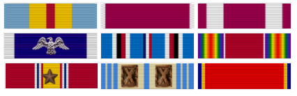

World War II
Despite her efforts to enlist in the US military, Hopper was rejected due to multiple reasons: at her age of 34 she was too old to enlist, her weight and height were too low, lastly she was rejected due to the nature of her job. According to the military her proficiency in Mathematics was valuable to the military effort. She had to get an exemption to enlist; she was 15 pounds (6.8 kg) below the Navy minimum weight of 120 pounds (54 kg). She served on the Mark I computer programming staff headed by Howard H. Aiken. Hopper and Aiken co-authored three papers on the Mark I, also known as the Automatic Sequence Controlled Calculator. Hopper's request to transfer to the regular Navy at the end of the war was declined due to her advanced age of 38.
Hopper and Aiken co-authored three papers on the Mark I, also known as the Automatic Sequence Controlled Calculator. Hopper's request to transfer to the regular Navy at the end of the war was declined due to her advanced age of 38. She continued to serve in the Navy Reserve. Hopper remained at the Harvard Computation Lab until 1949, turning down a full professorship at Vassar in favor of working as a research fellow under a Navy contract at Harvard
UNIVAC
In 1949, Hopper became an employee of the Eckert–Mauchly Computer Corporation as a senior mathematician and joined the team developing the UNIVAC I.Hopper also served as UNIVAC director of Automatic Programming Development for Remington Rand. The UNIVAC was the first known large-scale electronic computer to be on the market in 1950, and was more competitive at processing information than the Mark I.
When Hopper recommended the development a new programming language that would use entirely English words, she "was told very quickly that [she] couldn't do this because computers didn't understand English." Her idea was not accepted for 3 years, and she published her first paper on the subject, compilers, in 1952. In 1952 she had an operational link-loader, which at the time was referred to as a compiler. She later said that "Nobody believed that," and that she "had a running compiler and nobody would touch it. They told me computers could only do arithmetic." She goes on to say that her compiler "translated mathematical notation into machine code. Manipulating symbols was fine for mathematicians but it was no good for data processors who were not symbol manipulators.That was the beginning of COBOL, a computer language for data processors. I could say “Subtract income tax from pay” instead of trying to write that in octal code or using all kinds of symbols. COBOL is the major language used today in data processing.

COBOL
In the spring of 1959, computer experts from industry and government were brought together in a two-day conference known as the Conference on Data Systems Languages (CODASYL). Hopper served as a technical consultant to the committee, and many of her former employees served on the short-term committee that defined the new language COBOL (an acronym for COmmon Business-Oriented Language). The new language extended Hopper's FLOW-MATIC language with some ideas from the IBM equivalent, COMTRAN.
From 1967 to 1977, Hopper served as the director of the Navy Programming Languages Group in the Navy's Office of Information Systems Planning and was promoted to the rank of captain in 1973. She developed validation software for COBOL and its compiler as part of a COBOL standardization program for the entire Navy.
Awards table:
Top Row |
Defense Distinguished Service Medal (1986) |
Legion of Merit (1967) |
Meritorious Service Medal (1980) |
| Medium Row |
Presidential Medal of Freedom (2016, Posthumous) |
American Campaign Medal (1944) |
World War II Victory Medal (1945) |
| Bottom Row |
National Defense Service Medal with bronze service star (1953, 1966) |
Armed Forces Reserve Medal with two bronze hourglass devices (1963, 1973, 1983) |
Naval Reserve Medal (1953) |
